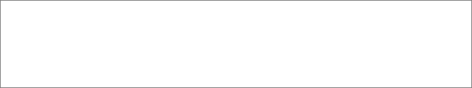

功能描述
功能模块
功能名称

功能描述

优先级
备注

P1

1.顶部设置下拉菜单，可通过下拉菜单筛选平台
2.下拉菜单默认均为全部
3.可通过关键词、作者搜索文章

对管理员显示“设置按钮”，点击按钮跳转到设置页面

首页
文章筛选

1.显示字段有：平台、标题、作者、关键词、发布时间、更新时间、使用计数、阅读量
2.默认按发布时间倒序排序
3.支持修改排序的字段有：平台、发布时间、更新时间、计数、阅读量
4.标题最多显示30字，超过显示...
5.显示三个关键词（通过标题切词，并计算在文中密度值，取前三个词），没有显示--
6.显示“查看原文”按钮，点击从新窗口打开原文链接。
7.设置分页，每页默认显示10条内容，支持修改为30、50条

文章列表
P1
使用计数：用户复制文章次数，没有显示--
P1
1.顶部设置下拉菜单，可通过下拉菜单筛选器平台
2.下拉菜单默认均为全部
3.可搜索作者（支持模糊匹配）

设置页面
文章筛选
1.显示字段有：平台、作者、作者首页、文章数量、合格数量、合格率、最后更新时间、状态
2.默认按合格数量排序
3.支持修改排序的字段有：平台、文章数量、合格数量、合格率、最后更新时间
4.点击作者首页链接，从新窗口打开作者首页
5.可以通过状态按钮切换状态：抓取/屏蔽
6.屏蔽账号显示在最后
7.更新时间大于1年自动屏蔽
8.设置分页，每页默认显示10条内容，支持修改为30、50条

作者列表

P1

1.点击文章标题，弹出文章详情弹窗
2.弹窗高度为屏幕的80%，固定在屏幕中间
3.显示文章标题、关键词、内容（内容框设置滚动条）
4.显示“一键复制”按钮，点击按钮，复制标题、关键词、内容
5.显示使用计数

文章详情

P1

P1
1.点击“阀值设置”按钮，弹出阀值设置弹窗
2.支持不同账号分别设置阀值
3.只抓取大于阀值的文章
阀值设置